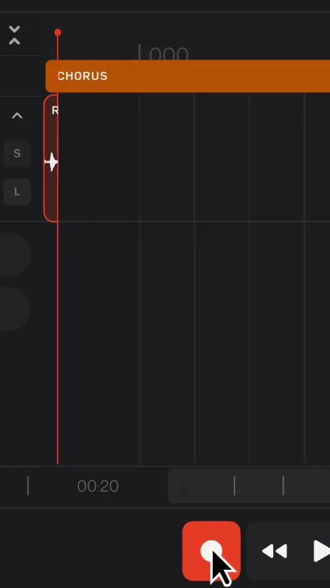
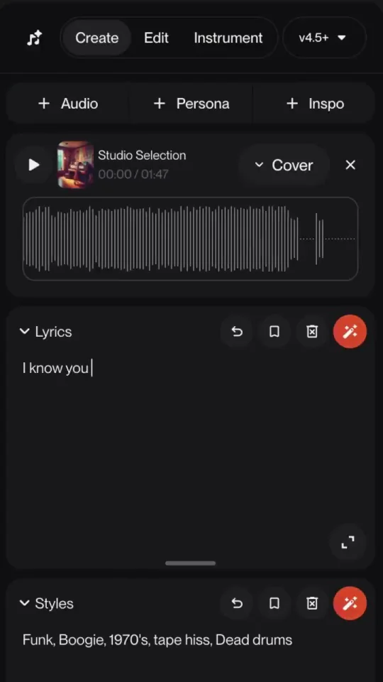
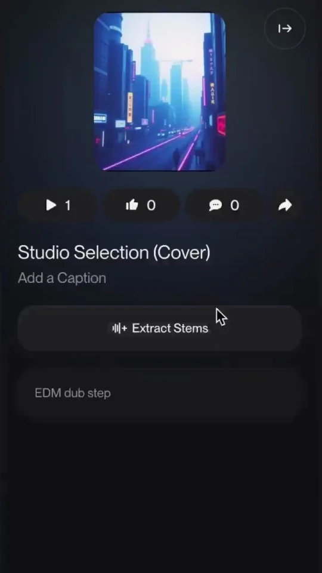
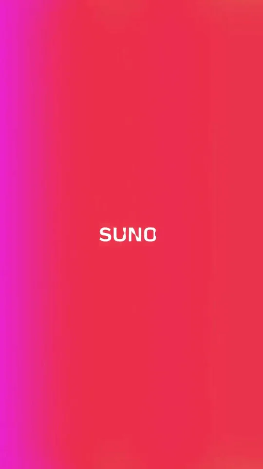

Suno / V143
Suno Studio 预告
红色录音按钮启动后，波形从左到右增长；切入声音列表，继续展开为多条彩色轨道。录制进度和播放头同向运动。
构图与编排 可播放 · 可替换内容
整体编排规则示例
查看 HTML 源码
<!doctype html><html lang="zh-CN"><meta charset="utf-8"><meta name="viewport" content="width=device-width,initial-scale=1"><title>Suno Studio 预告 · sequence</title><style>html,body{margin:0;width:100%;height:100%;overflow:hidden;background:#151515}canvas{display:block;width:100%;height:100%;object-fit:contain}</style><body data-mode="sequence"><canvas width="1000" height="600"></canvas><script src="data.js"></script><script src="common.js"></script><script src="scene.js"></script><script src="bridge.js"></script></body></html>画面元素录音按钮延长波形声部分轨列表彩色时间轨播放头品牌页
MOTION LANGUAGE
动作与构图
局部动作 · 构图规则
01
先录一段，再拆成可编辑声部
先录一段，再拆成可编辑声部规则示例
查看 HTML 源码
<!doctype html><html lang="zh-CN"><meta charset="utf-8"><meta name="viewport" content="width=device-width,initial-scale=1"><title>Suno Studio 预告 · sequence</title><style>html,body{margin:0;width:100%;height:100%;overflow:hidden;background:#151515}canvas{display:block;width:100%;height:100%;object-fit:contain}</style><body data-mode="clip" data-start="0" data-end="2.8"><canvas width="1000" height="600"></canvas><script src="data.js"></script><script src="common.js"></script><script src="scene.js"></script><script src="bridge.js"></script></body></html>红色录音按钮启动后，波形从左到右增长；切入声音列表，继续展开为多条彩色轨道。录制进度和播放头同向运动。
02
轨道颜色表示角色，不表示装饰
每条声部保持自己的颜色，片段的起止位置形成节奏。时间轴横向移动时，标签与播放头有稳定参照。
03
最后离开界面，保留音乐气氛
多轨快速浏览后切到红粉渐变背景和小型 SUNO Studio 字标。换工具时仍保留录音、分轨、编辑这条路径。
SEQUENCE
段落与节奏
点击段落，定位到上方编排示意。




画面参考 · 离散静帧
KEEP THE RELATIONSHIPS
制作其他主题
- 替换音轨数量和标签，片段长度需与目标音乐结构对应。
制作约束
录音按钮 / 延长波形 / 声部分轨列表 / 彩色时间轨 / 播放头 / 品牌页
- 红色录音按钮启动后，波形从左到右增长；切入声音列表，继续展开为多条彩色轨道。录制进度和播放头同向运动。
- 每条声部保持自己的颜色，片段的起止位置形成节奏。时间轴横向移动时，标签与播放头有稳定参照。
- 多轨快速浏览后切到红粉渐变背景和小型 SUNO Studio 字标。换工具时仍保留录音、分轨、编辑这条路径。